2020 Events Recaps
- Global Events
- Dzongkha Bhutanese (dz_BT)
- Kannada (kn)
- European Spanish (es_ES)
- French (fr_FR)
- Indonesian (id_ID)
- Japanese (ja)
- Bengali (bn_IN)
- Mumbai WordPress Community (gu, hi_IN, mr)
- Persian (fa_IR)
- Portuguese (pt_PT)
- Portuguese – Brazil (pt_BR)
- Russian (ru_RU)
- Tamil ta_IN
- Malayalam (ml_IN)
- Ukrainian (uk)
- Venezuelan Spanish (es_VE)
As part of the International Translation Day celebrations, a host of WordPress translation events took place in September and October 2020. Such was the enthusiasm for translating and the wonderful open source community, the celebrations lasted a total of four weeks.
In response to requests, the Polyglots and Marketing teams are exploring how to build on this momentum. You can catch recorded talks and interviews with polyglots from the month-long celebration on YouTube.
Follow @TranslateWP, and use the #WPTranslationDay tag on Twitter to share your translation adventures.
The Pulse of the translation Contribution during the week
- During the Translation Day celebration week of September 27 to October 4 (UTC), a total of 1,006 unique translation contributors uploaded 17,5683 strings on translate.wordpress.org platform. The average number of strings uploaded per hour was 915 strings.
- We welcomed 283 new contributors across 66 locale teams. The German team welcomed the highest number of new contributors, with 19 new members. They were followed by Italian (19) and Indonesian (15) teams.
- 4,142 language packs were created for 102 locales. 348 of them were for Spanish (Spain), 224 Dutch, and 222 Japanese.
Comparisons between 2019 and 2020
| 2019 (24 hours) | 2020 (7 days) | |
| Local events | 81 | 20+ |
| Strings translated | 46,653 | 175,683 |
- Top active locales during the first week included, French, Spanish, and Japanese translated strings.
- In the first seven days, the German team had the newest contributors (19 new members), followed by the Italian (19) and Indonesian (15) teams.
- 348 of the language packs were created for Spanish (Spain), 224 Dutch, and 222 Japanese.
Contributors also worked on the translation of HelpHub and handbook (polyglots, community, design, Gutenberg, etc.) documentation, style guide and glossary refinement, and other process improvements within their team.
Strings Comparisons On A Event Week and Regular Week
- Compared to the previous week, there were about 100 more active contributors on translate.wordpress.org. 39,488 more strings than the previous week were approved and 680 fewer strings were rejected.
Global Events
Translation Day: Polyglots Stats
Global Polyglot Mentor Naoko Takano opened the events on the International Translation Day with a presentation on WordPress and the polyglots.
You can watch her presentation at: https://www.youtube.com/watch?v=dgqMDbPWZdo
Global talks for International Translation Day
Thanks to WordPress Mumbai and Meher Bala for their help organizing these global events to help others in the community.
The event was divided into three sessions:
Session 1: Panel event including WordPress Translation week organizers Abha Thakor and Meher Bala with marketer and Serbian polyglot Maja Loncar. They were joined by new and experienced contributors Mizanur Rahaman Mizan from Bangladesh, Larissa Murillo from Ecuador, who shared their experiences of being a translator.
You can watch the panel discussion on the Make WordPress Marketing YouTube channel: https://youtu.be/hQztPxaL7M0
Session 2: A 30 min talk by cross-cultural communications trainer and experienced international contributor to the project, Abha Thakor. She talked about the benefits of translating WordPress into your local language.
You can watch the talk on the Make WordPress Marketing YouTube Channel: https://youtu.be/hQztPxaL7M0
Session 3: Panel Discussion with local and international WordPress contributors sharing their experience of taking part in translating.
You can watch the talk on the Make WordPress Marketing YouTube Channel: https://youtu.be/hQztPxaL7M0
Summary of Mini Events
Dzongkha Bhutanese (dz_BT)
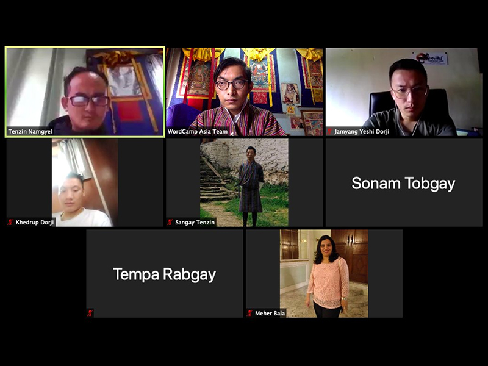
Locale: https://translate.wordpress.org/locale/dzo/
Date: Saturday 3 October 2020
Time: 16.00 to 17.00 UTC (10:00 AM – 12:00 PM BTT)
One of the Tweets from the Dzongkha event
The event featured guest speaker (Tenzin Namgyel), who is locale manager for dz_BT and General Translation Editor (GTE) helping to maintain dz_BT WordPress Core translations.
It was a very successful event, where knowledge and ideas were shared on how to contribute and how to use and increase the availability of WordPress in the Dzongkha-language. It featured examples of contributors and how WordPress can successfully be used by bloggers, developers or business professionals to make their living.
Ugyen Dorji and Tenzin Namgyel continued the translations until Monday evening for new contributors and they will reward two contributors with Wapuu WCAsia – those who reach the highest number of strings translated, counted from Saturday 11:30 AM to Monday 11:00 PM.
They now have 17 Translation Contributors and 42% of the translation for 5.5.x – Development is complete – up from 21%.
The Thimphu WordPress Meetup launch coincided with WordPress Translation Day celebrations and had the support of the Dzongkha Development Commission and the 13 members of the Bhutanese Core WordPress Translation Contributors.
On October 3, they reached 105 members which is a huge achievement for the growing community in Thimphu.
Kannada (kn)
Locales: https://translate.wordpress.org/locale/kn/
Date: Wednesday 30 September 2020
Time: 12:00 – 13.30 UTC (17:30 – 18:30 IST)
One of the Tweets from the event
Suresha, who is a very enthusiastic member of the Bengaluru WordPress community, gave a talk about the WordPress Polyglots project and why we should translate WordPress to as many languages in the world even when English is so widely-spoken. Quoting Kannada language poets, he talked about how we need to cross the language barrier to reach more people and their hearts.
His talk is available on WordPress.tv in a mix of English and Kannada language: https://wordpress.tv/2020/10/01/suresha-n-wordpress-translation-day-event/
General Translation Editor Omshivaprakash HL talked about his journey as a WordPress contributor and demonstrated the steps involved in the process of translation including creating an account on make.wordpress.org and Slack. He pressed that more and more people should contribute to translating WordPress to the Kannada language.
The mini event went on well as planned and was co-ordinated by Yogesh Londhe. He also welcomed the attendees in the beginning and submitted the vote of thanks at the end of the event.
European Spanish (es_ES)
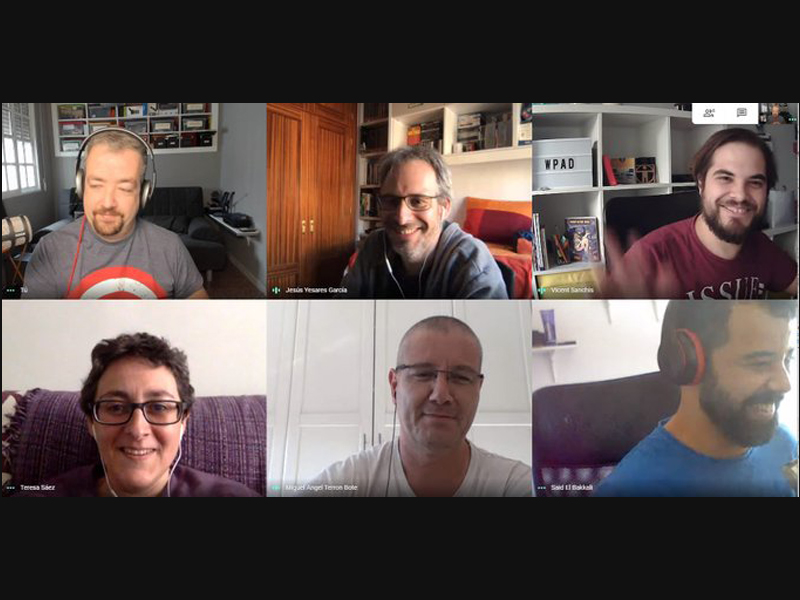
Locale: https://translate.wordpress.org/locale/es/
Date: Sunday 11 October 2020 – Tuesday 13 October 2020
One of the Tweets from the event
They completed the translation of the plugins: Smash Balloon Social Photo Feed, Addon Package for Elementor, Posts List, YITH WooCommerce Catalog Mode and additionally they completed the translation of the Blocksy theme. There were 200 translated strings in total.
French (fr_FR)
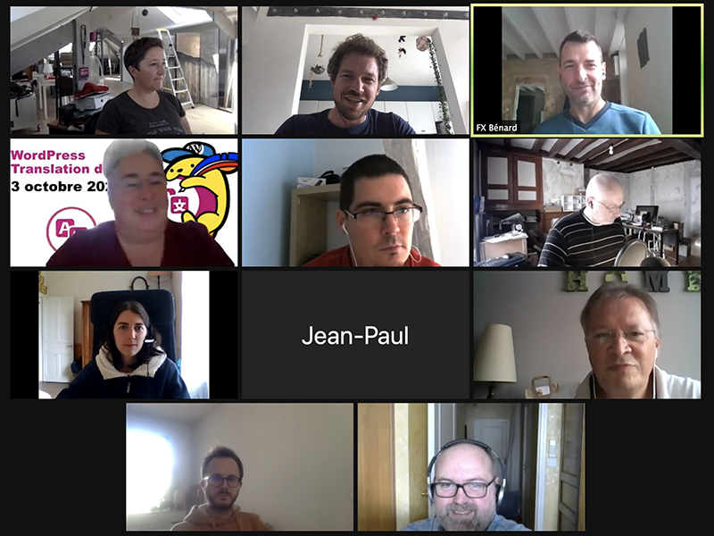
Locale: https://translate.wordpress.org/locale/fr/
Date: Saturday 3 October 2020
Time: 11:00 – 16:00 UTC (13.00 – 18.00 EST)
One of the Tweets from the event
The community ran an afternoon of translating using the Zoom video-conferencing platform and the French WordPress Slack. There were 12 participants on the day. They focused on translating WordPress themes and plugins and welcoming some new faces. Work on translating 11 plugins (extensions) into French was advanced or completed during the five hours of the event.
Several members of the team have expressed their desire to organize this type of event on a more regular basis, especially in the absence of face-to-face meetups and WordCamps.
Read the entire event write-up from the French-language community: https://fr.wordpress.org/team/2020/10/05/compte-rendu-wptd-fr-2020-10-03/
This is the second mini-event in French in 2020, read more about the first event in April.
WordPress Translation Day feature on the French polyglots https://wptranslationday.org/blog/french-polyglots-put-on-translation-day-event/
Summary of the April 2020 mini-event https://fr.wordpress.org/2020/04/10/rejoignez-le-premier-wordpress-translation-day-fr-en-visioconference-le-17-avril-2020/
Indonesian (id_ID)
Go to the Onboarding video in Indonesian language: https://www.youtube.com/embed/Ifqabp-36_c
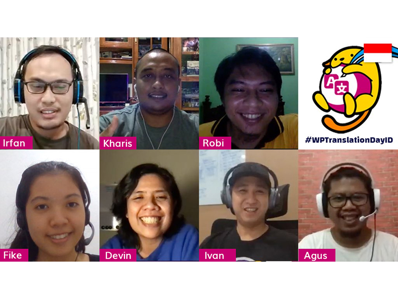
Locale: https://translate.wordpress.org/locale/id/
Date: Saturday 3 October 2020
Time: 7:00 AM – 9:00 AM UTC & 12:30 PM – 14:00 PM UTC (14:00 – 16:00 & 19:30 – 21:30 WIB)
One of the Tweets from the event
The Indonesian mini-event included a presentation and statistics about WordPress and the general translation scene. One of the General Translation Editors (GTEs) for the language, Ivan Kristianto gave a live translation demonstration.
The Indonesian mini-event was organized by our seven GTEs: Devin Maeztri, Kharis Sulistiyono, Agus Muhammad, Ivan Kristianto, Irfan Nurhamid, Robi Erwin Setiawan and Ascencia Fike. Like all the other locales, we had about just one week to promote the event, so we utilized some of our meetup.com accounts (five different groups in five different cities in Indonesia).
We held two sessions, the afternoon session and the evening session. In the afternoon session: with about 20 people watching live on both WordCamp Jakarta YouTube Channel and WordCamp Jakarta Facebook Page channels. The evening session garnered more people as the meeting was attended by 20-30 people. People continued to take part through watching these sessions following the event. Within the first two weeks, the videos had been watched more than 500 times!
In each of the sessions, we asked attendees if they had translated WordPress before. For people who were new to translation, we helped them get started by translating strings from the WordCamp.org website. For people who had already been involved in translation, we sent them to review the glossary we have for the language.
We also introduced participants to how we work collaboratively on the Indonesian Glossary using a Google spreadsheet. It worked well to use terms we had prepared which attendees could try translating. This was a popular exercise and participants were excited with working on something that could be part of a future glossary.
Our event generated some lively discussions on Slack and real progress on the WordCamp.org translation. Translations in this area were at 53% before the event. After just two sessions involving 11 participants, it jumped to 70%!
We think a community event and group translation event like this might be a good idea moving forward. The translation practice session is both lively and productive. It is also fun for all the newcomers and good exercise for us all. It has the potential to be a regular event.
Watch the video interview with one of the mini-event organizers and Indonesian polyglot contributors Ascencia Fike on the WordPress Marketing Channel YouTube.
Japanese (ja)
Join the WordPress Japan community Slack: https://wpja.slack.com/
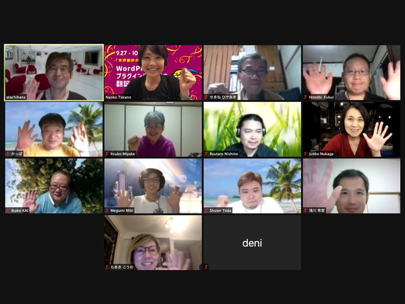
Locale: https://translate.wordpress.org/locale/ja/
Date: Sunday 27 September to Saturday 3 October 2020
Time: 12:00 – 13:00 UTC (21.00 – 22.00 JST) on the 27th September 2020
One of the Tweets from the events in Japan
This mini-event organised by the Tokyo WordPress community focused on translations throughout the main week of the event. There were many highlights of the week including on the night of 27 September, a meet and greet using the Zoom video conferencing tool. It also featured an overview of activities and instructions on how to translate WordPress plugins, themes and documentation. After that, some people stayed in the meeting to continue translating. Others continued to work on the #translate channel on the Japanese Slack.
On 30 September, more people from the Japanese community attended the weekly Global Polyglots meeting and worked together on Friday night’s regular translation session.
Throughout the week, the focus was on translating plugins and themes. There were also many people who wanted to translate long documents and they were able to choose projects to translate. The translation style guide was partially revised through the mini-event. Four new Plugin Translation Editors (PTEs) (Yukinobu Asakawa, Megumi Miki, torikumo and nishinos), were added, and a total of 440 themes and 2,792 translations which were pending for plugins were reviewed. A total of 25 projects now have translations available and nine projects are in progress.
The contributors prepared a comprehensive reference worksheet to keep track of the progress during the event.
Based on the feedback during the week, a Learn WordPress workshop video “Plugin Translation Instruction in Japanese” was published.
Bengali (bn_IN)
Go to the Onboarding video in Bengali language: https://www.youtube.com/embed/Cldxz9ihia0
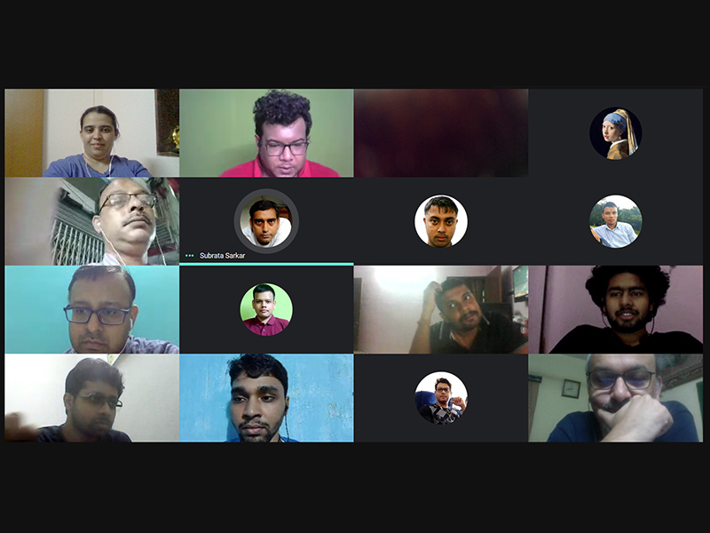
Locale: https://make.wordpress.org/polyglots/teams/?locale=bn_IN
Date: 27th September 2020 to 4th Oct 2020
Time:
Sunday 27th September 2020 at 10:30am – 11.30am UTC ( 16.00 – 18.00 IST)
Monday 28th September 2020, at 14:30 – 15:30 UTC (20.00 – 21.00 IST)
Sunday 4th October 2020, at 17:30am – 18.30am UTC (11.00 AM to 12:00 PM IST)
The Kolkata community conducted a week-long event, which kicked off on Sunday 27 September, with a workshop by General Translation Editors (GTEs) Tristup Ghosh and Rahul D Sarker on how to get started with WordPress Polyglots.
Check out the WordPress Translation Celebration Week Final Event which includes panellist Rahul D Sarker from the Kolkata community. https://www.youtube.com/watch?v=DFRN5ZB6hUs
On Monday 28 September, GTE for Bengali (in) Subrata Sarker gave a presentation to help people take their first steps translating. This included a demonstration of how to translate into Bengali.
On the last day of the week-long event, 4 October 2020, the community had a closing ceremony were they answered questions that had come up during the week and ran an open session.
Check out the video interview with Bengali contributor Aditi Sakra on encouraging local communities https://www.youtube.com/watch?v=XqufYa3HuiE
New contributors chat about how starting to translate WordPress https://www.youtube.com/watch?v=8YuXvnJXOdU
Earlier in 2020, the Bengali (Bangladesh) – bn_BD events and Bengali (bn_IN) communities ran mini-events. https://wptranslationday.org/blog/encouraging-the-translation-of-wordpress-into-bengali/
Check out Aditi Sakra on encouraging local communities https://www.youtube.com/watch?v=XqufYa3HuiE
New contributors chat about how starting to translate WordPress https://www.youtube.com/watch?v=8YuXvnJXOdU
Persian (fa_IR)
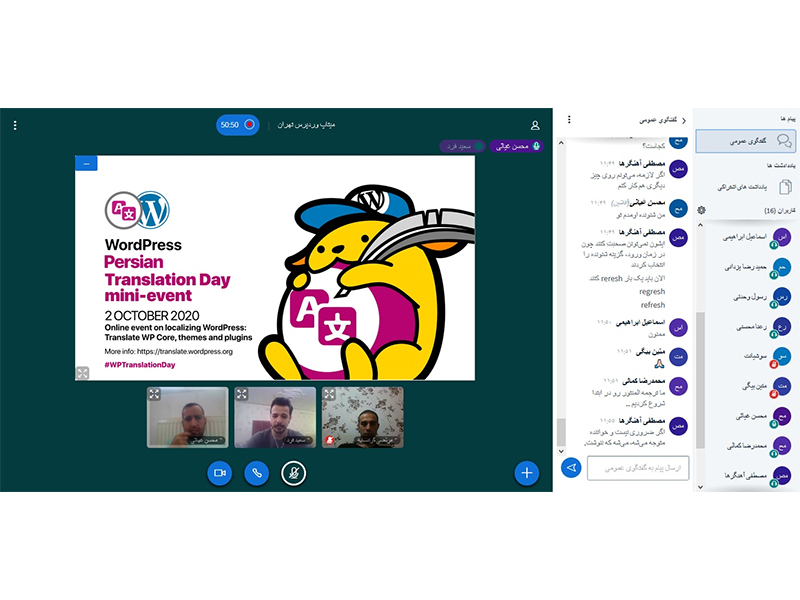
Locale: https://translate.wordpress.org/locale/fa/
Date: Friday 2 October 2020
Time: 8:00 AM – 10:00 AM UTC (11:00 – 13:00 IRST)
One of the Tweets from the events in Japan:
The Tehran WordPress Meetup community organised this mini-event to celebrate the Persian language. They translated more than 250 strings in Elementor and 100 strings for other plugins.
A Persian version of the video to help new contributors get started on Make WordPress will be available soon.
Portuguese (pt_PT)
Locale: https://translate.wordpress.org/locale/pt/
Date: Thursday, 1 October 2020
Time: 20:30 UTC (21:30 PM WEST)
One of the Tweets from the events in Portuguese:
During this event, they reviewed a couple of plugins and discussed the best solution for some strings that had i18n (internationalisation) issues.
Portuguese – Brazil (pt_BR)
Join the Portuguese – Brazil Community Slack: https://slack-wpbrasil.herokuapp.com
Locale: https://translate.wordpress.org/locale/pt-br/
Date: Saturday 3 October 2020
Time: All Day
One of the Tweets from the events in Portuguese – Brazil:
Several translation editors were available on the community’s #traducao Portuguese – Brazil Slack channel. They had many more people than expected and gave attention to PTE requests, meta and popular plugins translation.
Russian (ru_RU)
Join the Russian Community Slack: https://ruwp.slack.com
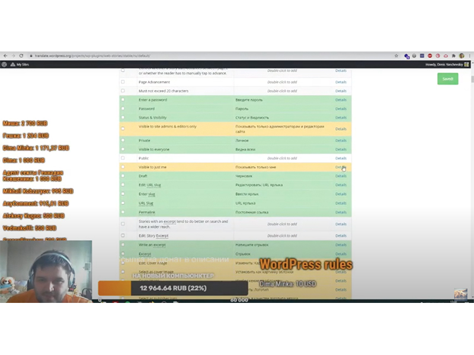
Locale: https://translate.wordpress.org/locale/ru/
Date: Saturday 3 October 2020
Time: 9am – 12pm UTC (12.00 – 15.00 MSK)
One of the Tweets from the events in Russian:
This mini-event had a three hour YouTube livestream with one General Translation Editors for the Russian-language GTEs Denis Yanchevsky and focused on translating plugins and themes for WordPress into Russian, specifically the Web Stories plugin.
During the event, the translators got acquainted with the Web Stories plugin and translated it from 0% to 90%. During the event, there was a question raised on whether the translation needed to be the exact translation of a word in a context or a translation giving the meaning of the phrase in the relevant language.
As a result of the mini-event, there has been an increased interest in WordPress translation locally and a better understanding of how to get involved, not only from people who were involved in the translation but also from those who just watched.
All participants had fun and were able to chat in Discord or on YouTube chat.
You can suggest new plugins and themes to translate for the next event by commenting on this post.
Tamil ta_IN
Take a look at the Tamil Glossary
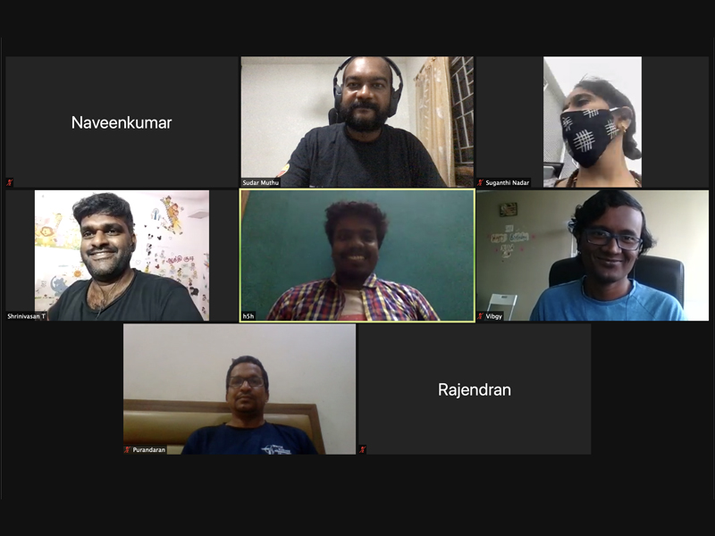
Locale: https://translate.wordpress.org/locale/ta/
Date: Saturday 10 October 2020
Time: 12:30 PM UTC (18:00 IST)
One of the Tweets from the events in Tamil:
The WordPress Tamil polyglots hosted their first online mini translation event and saw participation from volunteers, GTEs and linguistic experts from various time zones and countries besides India, like the US and Canada.
During the mini-event, translation of the recent version of WordPress 5.5 which stood at 60%, rose to 63%. This was thanks to the combined efforts of the enthusiastic volunteers. Apart from translating the strings, the team also reviewed the Tamil glossary to enrich it with new terms and edited it to ensure consistency with the existing terms.
After making significant progress, the two-hour-long event ended with a note to continue this momentum in the upcoming days to achieve 100% translation.
Malayalam (ml_IN)
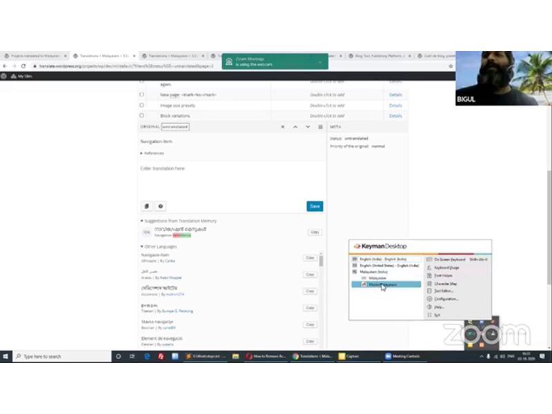
Locale: https://translate.wordpress.org/locale/ml/
Date: Saturday 3 October 2020
Time: 10:30 AM UTC (16:00 IST)
One of the Tweets from the events in Malayalam:

Four meetup groups in Kerala (Trivandrum, Kochi, Palakkad, and Kozhikode) jointly organized the Translation day mini-event for the Malayalam (ml_IN) locale. There were 16 attendees.
Bigul Malayi presented a session where he highlighted the benefits of translation and did a walkthrough of how to translate strings. They also formally set a target to complete their translation by the 5.6 release!
Ukrainian (uk)
Go to the Onboarding video in Ukrainian language: https://www.youtube.com/embed/VNpzk_Q9NbQ
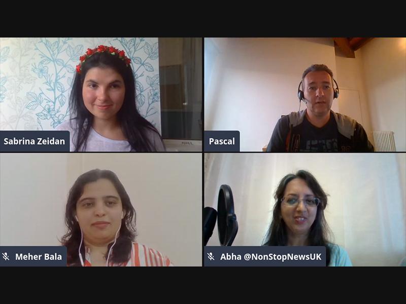
Locale: https://translate.wordpress.org/locale/uk/
Date: Sunday 4 October 2020
Time: 12:00 PM UTC (15:00 EEST)
One of the Tweets from the events in Ukrainian:
This mini-event had four people who were translating until the end of the event, and there was one first time translator! The main focus was translating the WordCamp site to Ukrainian.
Remarkably, this was not only their first translation event for Ukrainian, but also their first contributing event for the community. The opening remarks gathered an audience as it was broadcast live on YouTube. Organizer Sabrina Zeidan said was glad there was a chance to help new contributors get familiar with contributing. She added that it will be easier for people to participate in future events as they will have a model to copy and know what it involves.
This event also included a panel with WordPress Translation organizers Abha Thakor, Pascal Casier and Meher Bala.
Venezuelan Spanish (es_VE)
Go to the Onboarding video in Venezuelan language: https://www.youtube.com/embed/zjGzfVeTzvA
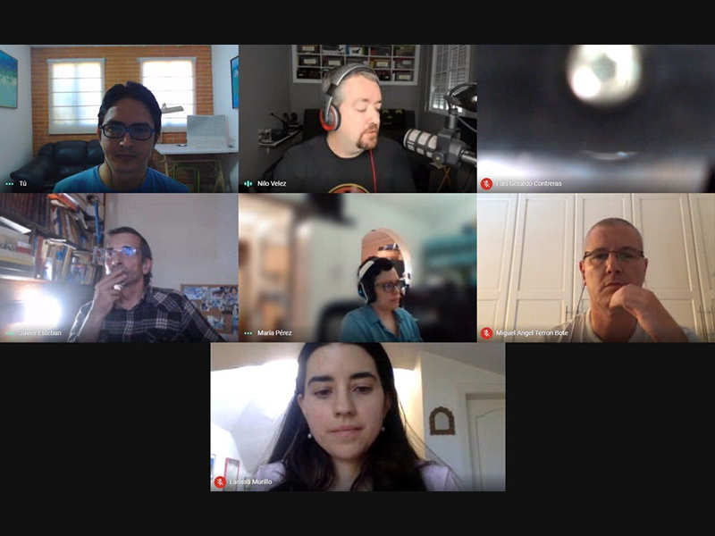
Locale: https://translate.wordpress.org/locale/es-ve/
Date: Saturday 10 October 2020
Time: 12:00 – 21:00 UTC (8.00am – 16.00 VET)
One of the Tweets from the events in Venezuelan Spanish:
The event ran on video-conferencing platform Google Meet and the Venezuelan Telegram Group. There was a focus on translating the plugins and themes with the most active installs.
A total of 1707 strings were translated: 1124 strings of plugins and 583 strings of themes. Seven projects were completed: two themes and five plugins.
Check out an infographic with the statistics of the event.
A short guide on how to contribute translation for es_VE:
https://ve.wordpress.org/colabora/traducciones/
Join the Venezuelan Community Telegram Channel.